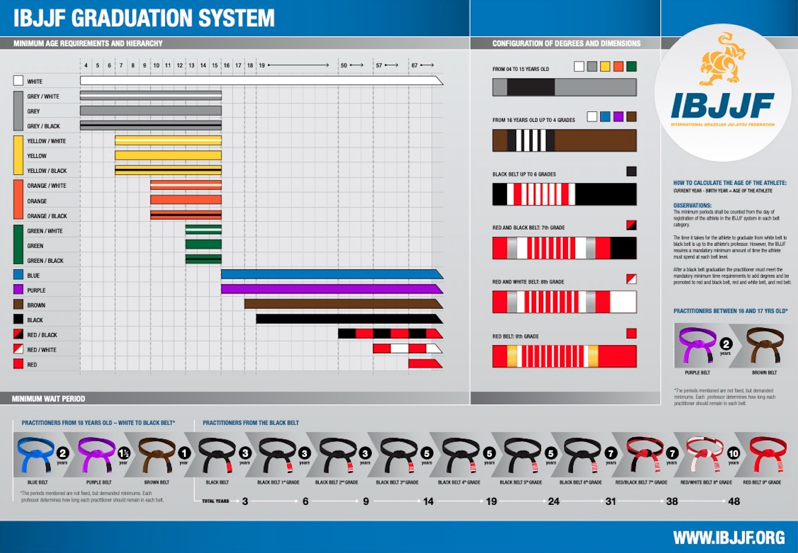

Camino hacia el Cinturón Negro
Sistema de graduación y progreso en ADBJJ
En ADBJJ, nos especializamos en la instrucción con un enfoque formativo y recreativo para estudiantes de todos los niveles.
Esta guía expone el sistema de graduación que implementamos, abarcando desde el cinturón blanco, el cual marca la introducción al BJJ para los principiantes, hasta el cinturón negro, que representan un alto nivel de competencia y entendimiento técnico. Cada cinturón en nuestro sistema está asociado con un conjunto específico de habilidades técnicas y conocimientos que deben ser dominados y demostrados para avanzar al siguiente nivel. El proceso está diseñado para asegurar un desarrollo progresivo y coherente, preparando a los estudiantes no solo para la lucha sino también para la enseñanza y contribución a la comunidad BJJ.
Cinturón Blanco
El cinturón blanco representa el inicio del viaje en el Brazilian Jiu Jitsu, donde se establecen los principios fundamentales del arte. En esta fase, el enfoque principal es la práctica constante y la resiliencia. Según Saulo Ribeiro en su obra Jiu-Jitsu University, el objetivo principal de un cinturón blanco es aprender a sobrevivir. Durante este período, es crucial familiarizarse con las posiciones principales y consolidar el entendimiento de que control o defensa implica cada una de ellas. Independientemente de la condición física previa o experiencia en otras artes marciales, como cinturón blanco enfrentarás desafíos y derrotas que son parte esencial del aprendizaje y el crecimiento en el BJJ.
Cinturón Azul
El cinturón azul es muy importante ya que marca el inicio de la profundización en el arte, donde los fundamentos se consolidan y se comienza la exploración mas detallada de técnicas. Para poder rendir examen se espera que el alumno lleve al menos 2 años entrenando con 288 clases asistidas (en base a 3 clases semanales).
Cinturón Morado
Como cinturón morado, el practicante perfecciona habilidades y técnicas con un enfoque en lograr encadenarlas y lograr dilemas multiples. Es un periodo crítico donde el practicante empieza a definir su estilo personal de lucha. Para poder rendir examen se espera que el alumno lleve al menos 2 años entrenando desde su examen de cinturón azul con 288 clases asistidas (en base a 3 clases semanales).
Cinturón Marrón
El cinturón marrón es el paso final antes del cinturón negro, donde se refina y domina una gama avanzada de técnicas y estrategias, y el practicante se prepara para tomar roles de liderazgo y enseñanza. Para poder rendir examen se espera que el alumno lleve al menos 2 años entrenando desde su examen de cinturón morado con 288 clases asistidas (en base a 3 clases semanales).
Cinturón Negro
Alcanzar el cinturón negro es una demostración de conocimiento avanzado en el BJJ. Significa que el practicante no solo domina técnicamente el arte, sino que también contribuye a la comunidad BJJ, enseñando y guiando a otros. Para poder rendir examen se espera que el alumno lleve al menos 2 años entrenando desde su examen de cinturón marron con 288 clases asistidas (en base a 3 clases semanales).
¿Examen?
Si, tomamos examen de grado.
Consideramos que es importante para el proceso
formativo que existan instancias que nos permitan consolidar
nuestros conocimientos técnicos como también ponerlos a
prueba. Los exámenes consisten en la demostración de un
grupo de técnicas y ejercicios relevantes para tu grado,
como también luchas con tus compañeros.
Requisitos mínimos
| Cinturón | Mínimo (Años) | Clases Acumuladas |
|---|---|---|
| Azul | 2 | 288 |
| Morado | 4 | 576 |
| Marrón | 6 | 864 |
| Negro | 8 | 1152 |
| Negro 1-3 Dan | +3 | - |
| Negro 4-6 Dan | +5 | - |
Sistema de graduación IBJJF
El sistema dispuesto por la IBJJF determina mínimos aceptados para graduaciones considerando participación en campeonatos IBJJF.
